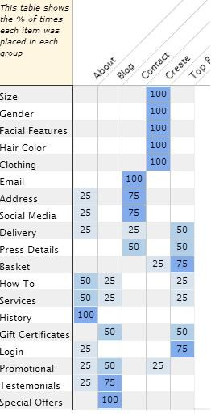

In order to record the opinions of others, I created the index cards using an online tool. The website called websort.net allowed me to create a free survey. The survey included a long list of items and a smaller list of groups. The groups represented the various main sections of the Foldable.me website. I decided upon the main sections based on the menu at the bottom of Foldable.me. These groups were "Create", "About", "Blog" and "Contact". I also added the group "Top Bar" which represented those important items that were soley listed at the top of the page. I explained to the other sorters that I wanted them to organize the items in the order that was most logical to them. I did not allow for items to be in more than one category, nor did I allow for the creation of new categories. In total, 4 people were surveyed.
Due perhaps to the strict guidlines I had in place, the website Foldable.me was sorted almost completely the way it currently is formatted. As is displayed in the chart below, every item except for one was placed at least 50% of the time into the actual group it is in. The only exception was the item titled "delivery" which represented an area on the website that described various expected shipping times. This item is currently in the "About" group, but the majority of those surveyed suggested it should be on the top of the page. I believe that this was due to a poor description of the item, in that those surveyed understood it to be a type of tracking tool, as opposed to the simple reference it actually is. Personally, I agreed with the three other sorters in that the website is currently formated in a very logical manner. The only suggestion that I have is that the "special offers" item should also have a link at the top of the page so that consumers are immediately made aware of the discounts available to them.
